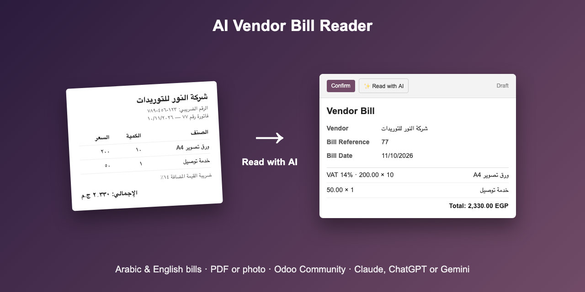
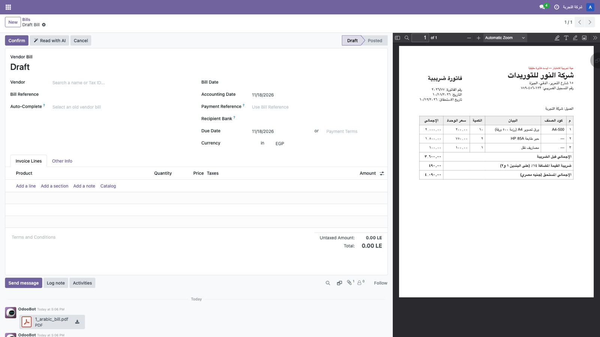
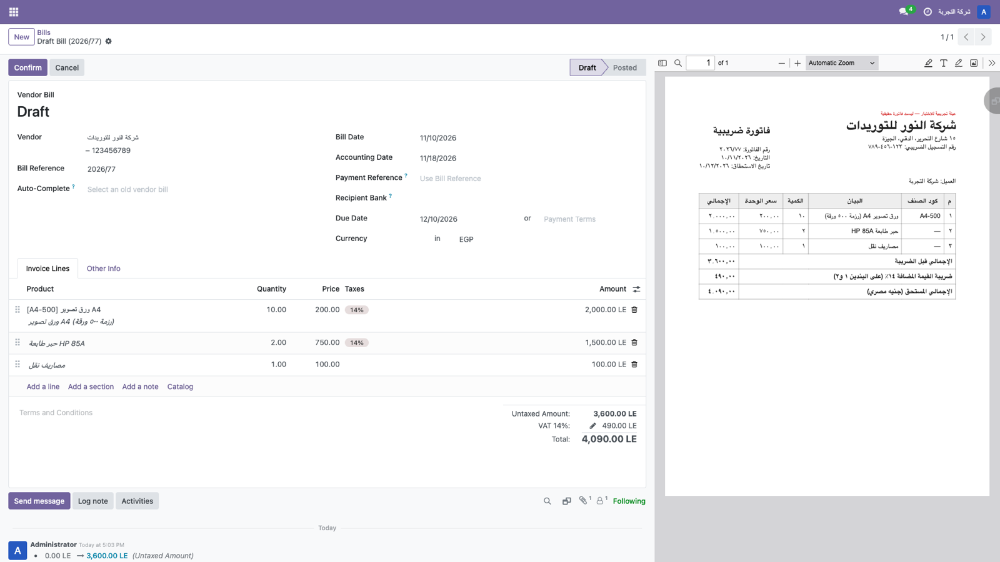
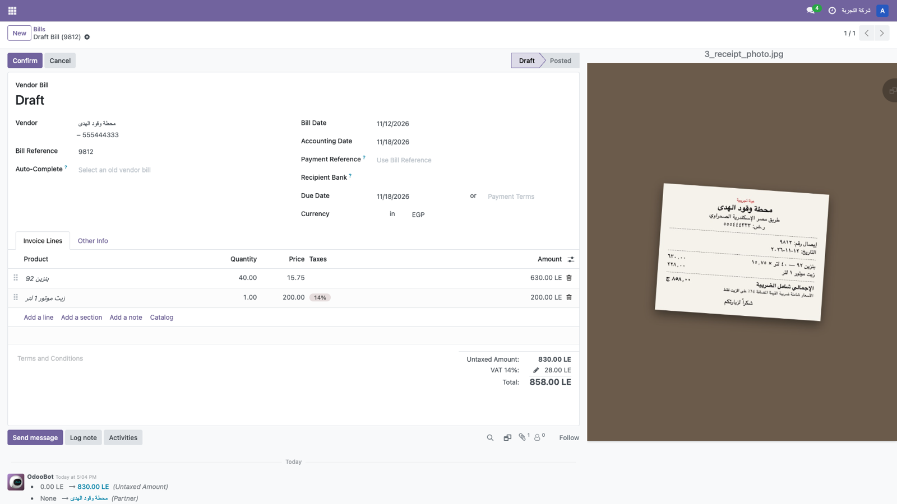
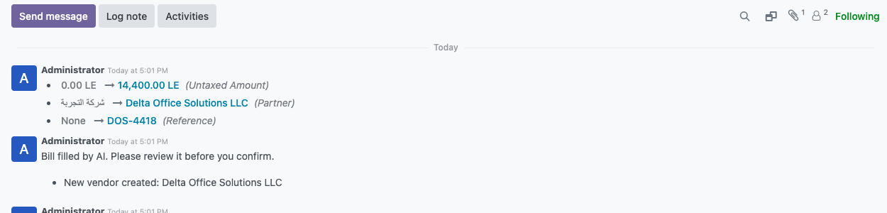
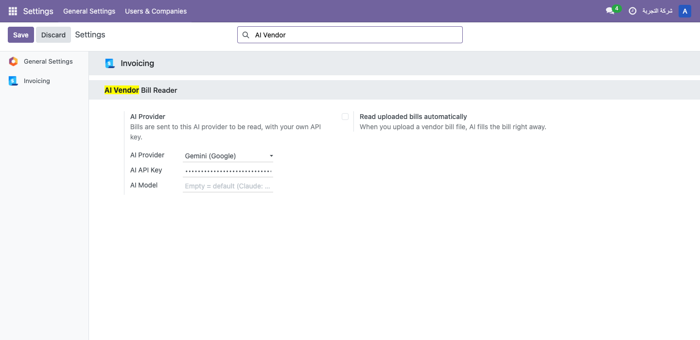

Upload a bill. AI fills it. You review and confirm.
Arabic and English vendor bills, PDF or phone photo, on Odoo Community. Use your own Claude, ChatGPT or Gemini key.

Reads Arabic-Indic digits, Arabic dates and tax numbers (الرقم الضريبي) from Egyptian, Saudi and UAE bills. Line descriptions stay in Arabic.
Vendor (matched by tax ID or name), bill number, bill date, due date, currency, every line with quantity, price, discount and VAT.
No Odoo IAP credits and no Enterprise needed. You pay your AI provider directly, usually a few cents per bill.





anthropic on the server (pip install anthropic; on Debian or Ubuntu servers: pip install --break-system-packages --ignore-installed typing_extensions anthropic). ChatGPT and Gemini need nothing extra.Questions or a bill it reads wrong? Contact me through the Odoo Apps store page.